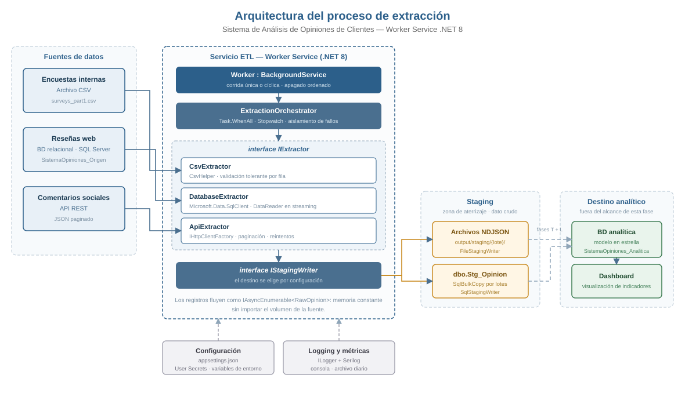
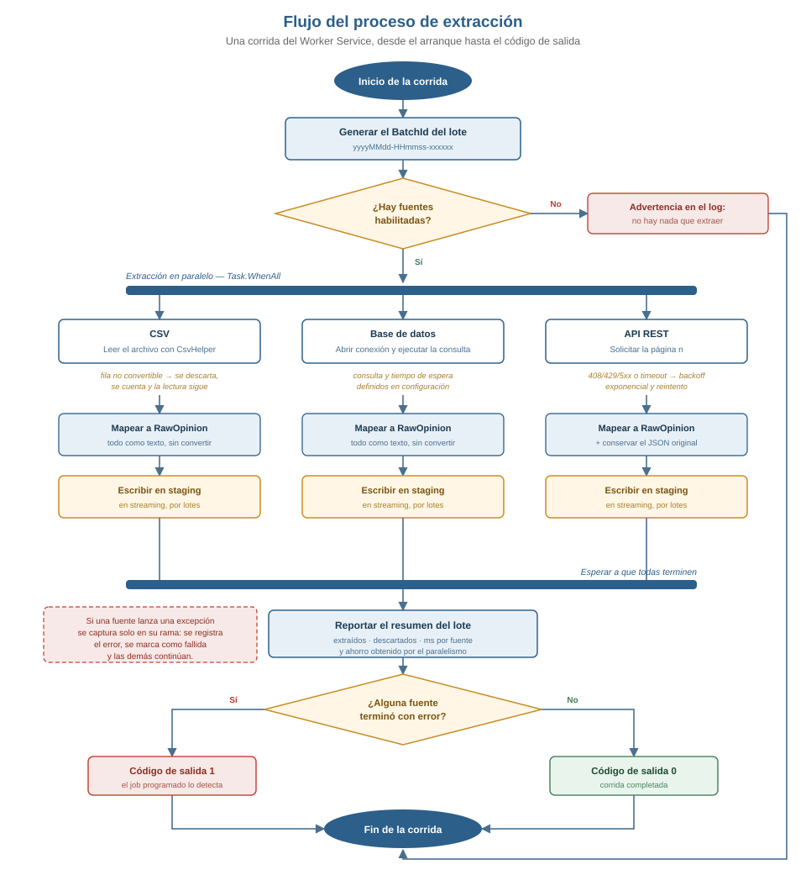

Sistema de Análisis de Opiniones de Clientes
Diseñar la arquitectura base del proceso ETL y desarrollar la fase de extracción correspondiente al proyecto, garantizando que la solución cumpla los atributos de calidad definidos en los requisitos no funcionales: rendimiento, escalabilidad, seguridad y mantenibilidad.
El sistema consolida las opiniones de clientes de una empresa de comercio electrónico recogidas por tres canales distintos: encuestas internas de satisfacción (archivos CSV), reseñas publicadas en el sitio web (base de datos relacional) y comentarios de usuarios en redes sociales (API REST).
Esta entrega cubre exclusivamente la extracción: leer las tres fuentes y aterrizar el dato crudo en una zona de staging. La transformación y la carga hacia el modelo analítico en estrella corresponden a las actividades siguientes.

Arquitectura orientada a servicios del proceso de extracción. Las flechas punteadas hacia la base analítica marcan el límite de esta actividad: la extracción termina en staging.
| Componente | Tecnología | Responsabilidad |
|---|---|---|
Worker | BackgroundService | Hospeda el proceso; corrida única o cíclica, con apagado ordenado. |
ExtractionOrchestrator | C# · Task.WhenAll · Stopwatch | Identifica el lote, lanza las fuentes en paralelo, mide y reporta. |
CsvExtractor | C# · CsvHelper | Lee y valida el archivo de encuestas internas. |
DatabaseExtractor | C# · Microsoft.Data.SqlClient | Ejecuta la consulta de extracción sobre la BD de origen. |
ApiExtractor | C# · IHttpClientFactory | Consume la API REST paginada, con reintentos ante fallos transitorios. |
FileStagingWriter | System.Text.Json | Aterriza lo extraído en archivos NDJSON. |
SqlStagingWriter | ADO.NET · SqlBulkCopy | Aterriza lo extraído en la tabla dbo.Stg_Opinion. |
| Servicio de logging | ILogger + Serilog | Traza de eventos, errores y métricas de rendimiento. |

Recorrido completo de una corrida del Worker Service, desde el arranque hasta el código de salida.
La extracción es un proceso recurrente y desatendido. BackgroundService aporta el
ciclo de vida completo (arranque, apagado ordenado mediante CancellationToken),
inyección de dependencias y configuración por capas sin escribir nada de eso a mano. Con
AddWindowsService() el mismo binario se instala como servicio de Windows sin
cambiar código, y con RunOnceAndExit sirve para ejecución programada. Una sola
base de código cubre los dos modos de operación.
IExtractor: una abstracción por fuente
Las tres fuentes no se parecen en nada —un archivo, un SqlDataReader y una API
paginada— pero desde el punto de vista del proceso hacen lo mismo: producir registros. Esa es
exactamente la definición de la interfaz:
public interface IExtractor
{
string SourceName { get; }
string SourceType { get; }
bool Enabled { get; }
IAsyncEnumerable<RawOpinion> ExtractAsync(ExtractionContext context, CancellationToken cancellationToken);
}
El orquestador recibe IEnumerable<IExtractor> y no conoce ninguna
implementación concreta. Es el principio de inversión de dependencias aplicado
literalmente: la política (orquestar, medir, reportar) no depende del detalle (cómo se lee un
CSV). También cumple el principio abierto/cerrado: sumar una cuarta fuente no
modifica ninguna clase existente, solo agrega una y una línea de registro en el contenedor.
IAsyncEnumerable en vez de devolver listas
Un extractor que devolviera Task<List<RawOpinion>> tendría que
materializar la fuente completa en memoria antes de escribir el primer registro. Devolviendo
IAsyncEnumerable<RawOpinion> los registros fluyen de la fuente al destino de
a uno: el consumo de memoria no depende del tamaño del archivo ni de cuántas filas devuelva la
consulta, y la escritura comienza mientras la lectura sigue en curso.
RawOpinion guarda todos los campos como texto y la tabla Stg_Opinion
los declara NVARCHAR. Es deliberado: si la extracción intentara convertir tipos,
un cambio de formato de fecha en el origen haría perder el registro en lugar
de registrarlo. Al aterrizar crudo, el dato siempre queda persistido y la fase de
transformación decide qué hacer con él, con la evidencia original disponible.
Por la misma razón el ApiExtractor conserva el JSON completo en
RawPayload: si el mapeo resulta incompleto, el dato está en staging y no hay que
volver a llamar la API.
IStagingWriter con dos implementaciones
El destino es una decisión de configuración, no de código. FileStagingWriter
(NDJSON) permite ejecutar y evidenciar la extracción sin depender de que haya un servidor
disponible; SqlStagingWriter es el destino de producción, con
SqlBulkCopy. Los extractores no saben cuál de los dos está activo.
Se eligió NDJSON —un objeto JSON por línea— y no un arreglo JSON único porque permite escribir en streaming y volver a leer el archivo por partes.
ApiExtractor no tiene una clase que refleje el contrato de la API. Lee el JSON con
JsonDocument y resuelve cada campo con el diccionario FieldMap de
appsettings.json:
"FieldMap": {
"ExternalId": "id",
"ClienteRef": "email",
"ProductoRef": "postId",
"Comentario": "body"
}Un cambio en el contrato de la API, o el cambio de proveedor, se absorbe editando configuración. Es la parte del sistema con mayor probabilidad de cambiar y la que menos código requiere tocar.
IHttpClientFactory y no new HttpClient()
Instanciar HttpClient por llamada agota los sockets del sistema; reusarlo como
campo estático deja de ver los cambios de DNS. IHttpClientFactory resuelve ambos
problemas: agrupa y recicla los handlers en un intervalo configurado.
El ApiExtractor reintenta con retroceso exponencial (1 s, 2 s, 4 s) ante los
códigos 408, 429 y 5xx, y ante timeouts. Un 401 o un 404 no se reintentan: no
se arreglan esperando y reintentarlos solo retrasa el diagnóstico.
| Mecanismo | Dónde | Efecto |
|---|---|---|
| Extracción en paralelo | ExtractionOrchestrator → Task.WhenAll | La corrida dura lo que la fuente más lenta, no la suma de todas. |
| E/S asíncrona de punta a punta | ExtractAsync, OpenAsync, ReadAsync, WriteLineAsync | Ningún hilo queda bloqueado esperando disco, red o base de datos. |
Streaming con IAsyncEnumerable | los tres extractores | Memoria constante, independiente del volumen. |
SqlBulkCopy por lotes | SqlStagingWriter | Carga masiva por protocolo TDS en vez de un INSERT por fila. |
| Buffer de 64 KB y vaciado por lote | FileStagingWriter | Menos llamadas al sistema de archivos. |
Medición con Stopwatch | por fuente y total | Métrica objetiva: registros/segundo y ahorro por paralelismo. |
| Límite de concurrencia | SemaphoreSlim configurable | Evita saturar la red o los servidores de origen al crecer en fuentes. |
IExtractor y registrarla. Ni el orquestador ni el Worker ni los escritores de staging cambian.Enabled de cada fuente, en configuración, sin recompilar ni redesplegar.IStagingWriter (por ejemplo, hacia almacenamiento en la nube) sin tocar los extractores.appsettings.json contiene nombres de cadenas de conexión, nunca valores con credenciales. Los secretos llegan por User Secrets en desarrollo y por variables de entorno en despliegue, que el host incorpora a la cadena de configuración con precedencia sobre el archivo.HttpClient y nunca se escribe en la traza.Encrypt=True..gitignore excluye los archivos de origen reales y las salidas de staging; el repositorio solo lleva una muestra.Worker (ciclo de vida) → ExtractionOrchestrator (coordinación) → IExtractor (acceso a la fuente) → IStagingWriter (persistencia). Cada clase tiene un solo motivo para cambiar.EtlOptions enlaza la sección completa y se inyecta con IOptions<T>; no hay lectura de configuración dispersa por el código.try/catch. Si la API está caída, las encuestas y las reseñas se extraen igual y el resumen indica exactamente qué falló y por qué.BatchId, SourceName y ExtractedAtUtc; siempre se puede reconstruir de dónde salió un dato y en qué corrida.ILogger; Serilog está detrás y sus destinos se declaran en configuración. Cambiar de proveedor no toca el código.CsvExtractor reutiliza SurveyDto de la capa de datos, que ya declara el mapeo de las cabeceras con tilde (Clasificación, PuntajeSatisfacción) mediante atributos de CsvHelper.SistemaOpiniones.Etl/Services/ExtractionOrchestrator.cs
var stopwatch = Stopwatch.StartNew();
using var gate = _options.MaxDegreeOfParallelism > 0
? new SemaphoreSlim(_options.MaxDegreeOfParallelism)
: null;
var results = await Task.WhenAll(
enabled.Select(extractor => ExtractSourceAsync(extractor, batchId, startedAtUtc, gate, cancellationToken)));
stopwatch.Stop();
LogSummary(batchId, results, stopwatch.ElapsedMilliseconds);Aislamiento de fallos por fuente:
catch (Exception ex)
{
stopwatch.Stop();
_logger.LogError(ex, "[{Source}] Falló la extracción tras {Elapsed} ms",
extractor.SourceName, stopwatch.ElapsedMilliseconds);
return ExtractionResult.Fail(
extractor.SourceName, extractor.SourceType, ex.Message, stopwatch.ElapsedMilliseconds);
}SistemaOpiniones.Etl/Extractors/CsvExtractor.cs
ReadingExceptionOccurred = args =>
{
var row = args.Exception.Context?.Parser?.Row;
if (args.Exception is TypeConverterException)
{
context.RegisterRejected();
_logger.LogWarning("Fila {Row} descartada en {Source}: {Message}", row, SourceName, args.Exception.Message);
}
else
{
_logger.LogWarning("Fila {Row} con formato irregular en {Source}: {Message}", row, SourceName, args.Exception.Message);
}
return false; // no aborta la lectura del archivo
}Se distingue el fallo de conversión —que sí descarta el registro— del cambio en el número de columnas, que CsvHelper reporta pero igual entrega la fila. Sin esa distinción los totales del reporte no cuadrarían con las filas del archivo.
SistemaOpiniones.Etl/Extractors/DatabaseExtractor.cs
await using var connection = new SqlConnection(connectionString);
await connection.OpenAsync(cancellationToken);
await using var command = new SqlCommand(_options.Query, connection)
{
CommandType = CommandType.Text,
CommandTimeout = _options.CommandTimeoutSeconds
};
await using var reader = await command.ExecuteReaderAsync(cancellationToken);
var ordinals = MapOrdinals(reader); // se resuelven una sola vez
while (await reader.ReadAsync(cancellationToken))
{
yield return new RawOpinion { /* ... */ };
}SistemaOpiniones.Etl/Extractors/ApiExtractor.cs
if (!response.IsSuccessStatusCode)
{
if (!IsTransient(response.StatusCode) || attempt > _options.RetryCount)
throw new HttpRequestException($"La API respondió {(int)response.StatusCode} {response.ReasonPhrase} en '{url}'.");
await DelayBeforeRetryAsync(attempt, $"HTTP {(int)response.StatusCode}", cancellationToken);
continue;
}SistemaOpiniones.Etl/Program.cs
builder.Services.AddTransient<IExtractor, CsvExtractor>();
builder.Services.AddTransient<IExtractor, DatabaseExtractor>();
builder.Services.AddTransient<IExtractor, ApiExtractor>();
builder.Services.AddHttpClient(ApiExtractor.HttpClientName, (serviceProvider, client) =>
{
var api = serviceProvider.GetRequiredService<IOptions<EtlOptions>>().Value.Sources.Api;
client.BaseAddress = new Uri(api.BaseUrl, UriKind.Absolute);
client.Timeout = TimeSpan.FromSeconds(api.TimeoutSeconds);
// La llave nunca se registra en logs ni se guarda en appsettings.json.
if (!string.IsNullOrWhiteSpace(api.ApiKey))
client.DefaultRequestHeaders.Add(api.ApiKeyHeaderName, api.ApiKey);
})
.SetHandlerLifetime(TimeSpan.FromMinutes(5));Resumen registrado por el propio servicio al final de una corrida real:
[INF] Lote 20260806-032555-540cdb: iniciando extracción de 3 fuente(s) en paralelo
[INF] ──────── Resumen del lote 20260806-032555-540cdb ────────
[INF] EncuestasInternas CSV OK 39 extraídos 1 descartados 138 ms
[ERR] ResenasWeb Database ERROR No se encontró el servidor o no estaba accesible
[INF] ComentariosRedesSociales ApiRest OK 500 extraídos 0 descartados 900 ms
[INF] TOTAL: 539 registros, 1 descartados, 1 fuente(s) con error en 15182 ms
(suma secuencial 16176 ms; el paralelismo ahorró 994 ms)Registro aterrizado en staging, tal como queda en el archivo NDJSON:
{"BatchId":"20260806-032555-540cdb","SourceName":"EncuestasInternas","SourceType":"CSV",
"ExternalId":"1","ClienteRef":"7","ProductoRef":"16","FuenteRef":"Encuesta",
"Fecha":"2025-01-10","Comentario":"El proceso de compra fue muy sencillo, repetiría.",
"Puntaje":"5","Clasificacion":"Positiva","ExtractedAtUtc":"2026-08-06T03:25:55.545Z","RawPayload":null}El archivo de encuestas tiene 40 filas de datos; se extrajeron 39 y se descartó 1, la única con un identificador de cliente no numérico. Los totales cuadran con el contenido del archivo, que es la comprobación de que el conteo de descartes es correcto.
| Requisito de la actividad | Estado |
|---|---|
| Worker Service en .NET 8 | Implementado — SistemaOpiniones.Etl |
| Extracción de CSV con CsvHelper | Implementado y ejecutado |
| Extracción desde base de datos relacional | Implementado; pendiente de servidor SQL para ejecutarlo |
Extracción desde API REST con HttpClient | Implementado y ejecutado |
| Datos en archivos temporales o tablas staging | Ambos: NDJSON y dbo.Stg_Opinion |
Logs de eventos y errores con ILogger | ILogger + Serilog (consola y archivo diario) |
Interfaz IExtractor y clases derivadas | Implementado |
Validación de rendimiento con Stopwatch | Implementado, por fuente y total |
| Configuraciones centralizadas en archivos JSON | appsettings.json + User Secrets |
| Diagrama de arquitectura | Sección 2 |
| Diagrama de flujo del proceso ETL | Sección 3 |
| Justificación de las decisiones técnicas | Sección 4 |
| Validación de los atributos de calidad | Sección 5 |
| Evidencia del código de extracción | Secciones 6 y 7 |
La fuente de base de datos no se ha podido ejecutar porque el equipo de
pruebas no tiene SQL Server instalado. El código, el script de creación de la base de origen
(SistemaOpiniones.Etl/Sql/02_Origen_ResenasWeb.sql) y su configuración están
completos: al levantar el servidor y ajustar la cadena de conexión, la fuente entra en
funcionamiento sin cambios de código.